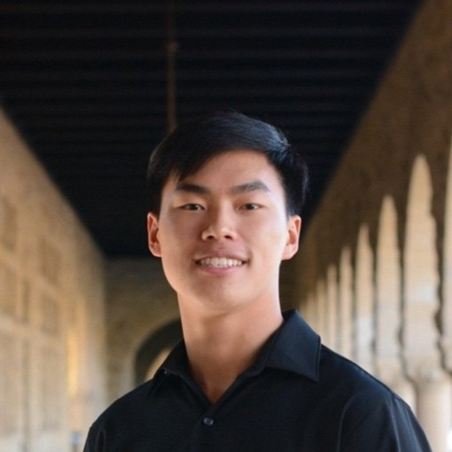
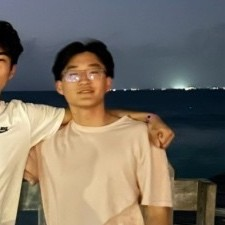

Kristopher Luo
CEO & Co-founder
Kristopher has developed vision-based edge products across research and industry, from agriculture robotics to production neural-network deployment.
At Null Labs, we're a team of robotics and AI experts dedicated to providing an open environment simulation that autonomy teams can use to accelerate the development and testing of robots that can perceive the world around them and act.

CEO & Co-founder
Kristopher has developed vision-based edge products across research and industry, from agriculture robotics to production neural-network deployment.

CTO & Co-founder
Niel previously led infrastructure at a DeepMind spinout and studied electrical engineering and neuroscience theory at Stanford.